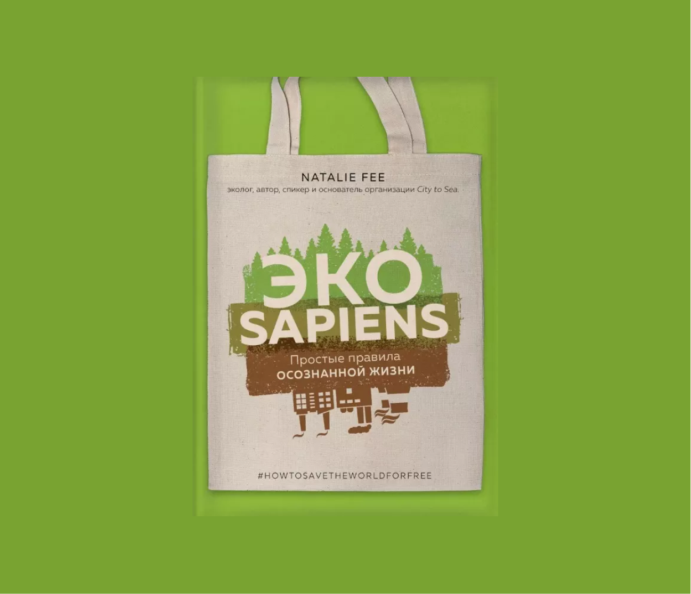

ЭКО
Sapiens
Sapiens
Читать

ЭКОsapiens. Простые правила осознанной жизни. Натали Фи.
Вас беспокоит изменение климата и его глобальное влияние
на нашу окружающую среду? Хотите помочь, но не знаете
с чего начать? Новое руководство Натали Фи по "зеленой
жизни" поможет вам внести небольшие изменения во все ключевые
сферы жизни, от еды до выборов, которые будут иметь
большое значение для планеты. Полезные и доступные советы
для всех — как новичков, так и уже осознанных
потребителей. Давайте спасать мир вместе!
#HowToSaveTheWorldForFree
#HowToSaveTheWorldForFree
МЫ В СОЦ СЕТЯХ